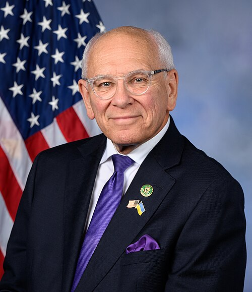

2026 Endorsements
The City of Troy Democratic Committee proudly endorses the following candidates for 2026.
The City of Troy Democratic Committee proudly endorses the following candidates for 2026.

U.S. House of Representatives — NY-20
Paul Tonko has been in this seat for eight terms, and he's made them count for Troy. He secured $2 million for the Troy Public Library's indoor air quality improvements, $2 million for Hudson Valley Community College's Applied Technology Education Center, and $1 million for a major local infrastructure project. He misses fewer than 1% of roll call votes.
Before Congress, he spent 24 years in the NYS Assembly, chaired the Energy Committee for 15 of them, and led NYSERDA. Now he's Ranking Member on the House Environment Subcommittee. He brings it home. We're backing him.
NY State Senate — District 43
Devin Lander has been showing up for this region since well before he announced his campaign. As New York's State Historian, he co-hosts the award-winning WAMC podcast A New York Minute in History, bringing Capital Region stories to a statewide audience. He was at the unveiling of the Garnet Douglass Baltimore historical marker — Troy's own trailblazer and the first African American graduate of RPI. He knows what's been left on the table in Albany.
Democrats now outnumber Republicans in District 43 by nearly 20,000 voters. Schools are cutting arts, music, and sports. Lead pipes and crumbling roads go unaddressed. Utility bills keep climbing. Devin is running to change that, and we're with him.
NY State Assembly — District 108
John McDonald ran a pharmacy before he ran a city, and both experiences show in what he does in Albany. He sponsored legislation to ban the incineration of PFAS-containing firefighting foam, closing a loophole that had exposed Capital Region communities to toxic chemicals for years. He secured a new stormwater grant program in the adopted state budget so municipalities can fund infrastructure projects they couldn't afford on their own.
He's chaired the Governmental Operations Committee since 2013. Before that, he served 13 years as Mayor of Cohoes, where the city saw its first population growth since 1930. He's been one of us the whole time, and it shows in what he gets done.
Rensselaer County District Attorney
Mary Pat Donnelly has held the DA's office since January 2019, and she's used every year of it. Her office partnered with Love is Respect to reach domestic violence victims who might not otherwise know where to turn. She built a Victim Assistance Program so crime victims don't walk into the justice system alone. On her own time, she volunteers with Street Soldiers Rensselaer, working community violence intervention on Troy's streets.
She co-founded a scholarship fund that's given $200,000+ to first responders' families since 2006. Her fellow DAs across New York elected her their statewide president in 2025. That's the record. We're proud to stand with her.